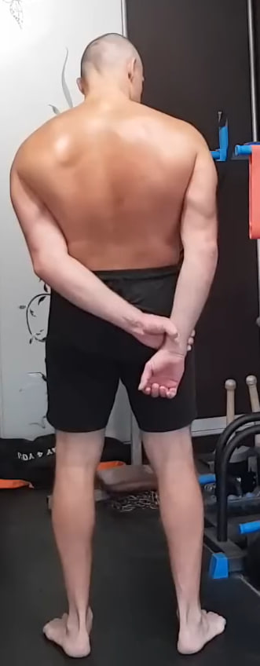
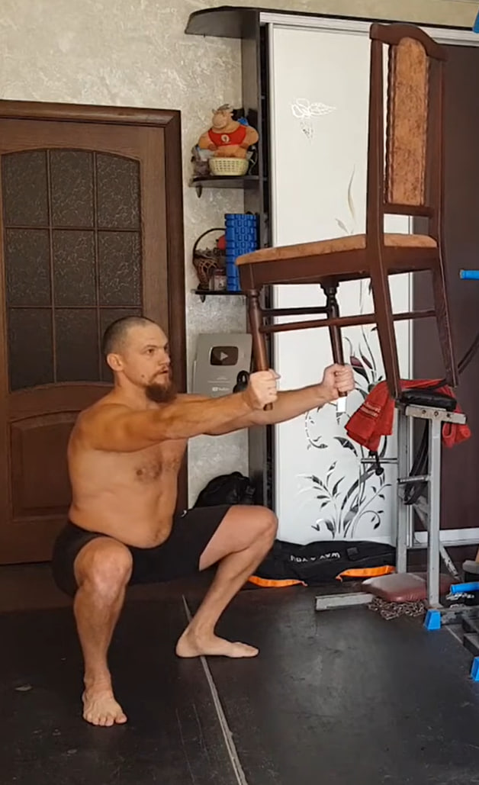
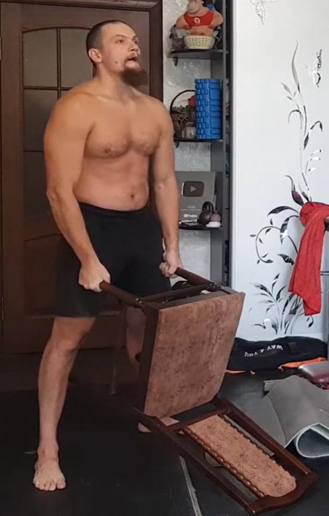
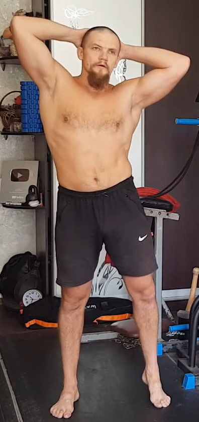

Día 16: isometría y control + empuje (pecho, hombros y tríceps) (sin equipo)
Hoy trabajamos isometría y control, empuje (pecho, hombros y tríceps), core (abdomen y zona media) con ejercicios simples que caben en una habitación. El objetivo es construir fuerza útil, resistencia y control corporal con el mínimo de equipo.
Prioriza la técnica, respira con control y acumula consistencia: incluso una sesión corta suma cuando la repites día tras día.
1. Colgamiento parcial con apoyo en los pies
Antes de empezar: haz el calentamiento y repasa la respiración. (No lo saltes.)
Protocolo isométrico: tensión 10 s + descanso 5 s × 10 repeticiones (por lado, si aplica). Respira 3‑3‑3 durante la tensión (inhalar 3 s, retener 3 s, exhalar 3 s) y usa 3‑6‑3 entre series para recuperar. Más detalles: Respiración.

Agarra una barra o cualquier soporte sólido que no pueda romperse. No cuelgues todo tu peso como en una dominada: deja parte del peso sobre los pies para mantener un estiramiento seguro y controlado. Relaja los hombros y permite que la columna se alargue de forma natural; si es posible, inclina ligeramente la pelvis hacia adelante para mejorar la descompresión de la espalda.
2. “Coco” entre las escápulas
Protocolo isométrico: tensión 10 s + descanso 5 s × 10 repeticiones (por lado, si aplica). Respira 3‑3‑3 durante la tensión (inhalar 3 s, retener 3 s, exhalar 3 s) y usa 3‑6‑3 entre series para recuperar. Más detalles: Respiración.

Ponte de pie, con los pies al ancho de la pelvis. Lleva ambos brazos por detrás del cuerpo y entrelaza los dedos a la altura de la zona lumbar o ligeramente más arriba. Los codos se dirigen hacia atrás y un poco hacia fuera, el pecho se abre, los hombros descienden y no se elevan hacia las orejas.
Imagina que entre las escápulas hay un coco que debes aplastar con fuerza. El trabajo principal se realiza al juntar las escápulas, creando una contracción intensa en la parte media de la espalda. La zona lumbar no se arquea en exceso, el torso permanece estable y vertical.
Realiza 10 repeticiones . La respiración es tranquila, sin bloqueos.
3. Isometría del dorsal ancho con tracción del brazo
Protocolo isométrico: tensión 10 s + descanso 5 s × 10 repeticiones (por lado, si aplica). Respira 3‑3‑3 durante la tensión (inhalar 3 s, retener 3 s, exhalar 3 s) y usa 3‑6‑3 entre series para recuperar. Más detalles: Respiración.

Colócate de pie. Sujeta una mano con la otra y tira del brazo hacia abajo, mientras al mismo tiempo resistes ese movimiento con el músculo situado debajo de la escápula (dorsal ancho). El objetivo no es mover el brazo, sino crear una oposición interna: el brazo quiere bajar, y el dorsal ancho se contrae para impedirlo. El torso permanece estable, sin balanceos ni inclinaciones.
Realiza 10 repeticiones por cada lado .
4. Hiperextensión isométrica en el suelo
Protocolo isométrico: tensión 10 s + descanso 5 s × 10 repeticiones (por lado, si aplica). Respira 3‑3‑3 durante la tensión (inhalar 3 s, retener 3 s, exhalar 3 s) y usa 3‑6‑3 entre series para recuperar. Más detalles: Respiración.

Acuéstate boca abajo en el suelo. Coloca las manos detrás de la cabeza, sin tirar del cuello. Las piernas están estiradas y activas. Desde esta posición eleva simultáneamente el pecho y las piernas, creando una contracción fuerte de la zona lumbar, los glúteos y la parte posterior del cuerpo. El abdomen permanece ligeramente activo para estabilizar la postura.
Realiza 10 repeticiones .
5. Elevación frontal isométrica con silla en posición de “silla”
Protocolo isométrico: tensión 10 s + descanso 5 s × 10 repeticiones (por lado, si aplica). Respira 3‑3‑3 durante la tensión (inhalar 3 s, retener 3 s, exhalar 3 s) y usa 3‑6‑3 entre series para recuperar. Más detalles: Respiración.



Sujeta una silla por las patas y extiende los brazos completamente al frente, a la altura del pecho o ligeramente por encima, manteniéndolos rectos sin bloquear los codos. El torso permanece firme, el pecho abierto y los hombros abajo, sin encogerse.
Adopta la posición de “silla”: flexiona las rodillas hasta un ángulo cercano a 90 grados, como si te sentaras en una silla invisible. La espalda permanece totalmente recta, sin inclinarse hacia adelante. Desde esta postura mantén la silla al frente creando una tensión fuerte en hombros, brazos y zona media del cuerpo.
Realiza 10 repeticiones .
6. Tríceps isométrico con el brazo a 90 grados
Protocolo isométrico: tensión 10 s + descanso 5 s × 10 repeticiones (por lado, si aplica). Respira 3‑3‑3 durante la tensión (inhalar 3 s, retener 3 s, exhalar 3 s) y usa 3‑6‑3 entre series para recuperar. Más detalles: Respiración.

Flexiona el brazo de trabajo formando un ángulo de unos 90 grados y colócalo por encima de la mano de apoyo. La mano inferior actúa como punto fijo y empuja hacia arriba, mientras que el brazo de trabajo intenta extenderse hacia abajo , activando intensamente el tríceps.
Mantén la tensión máxima unos segundos y repite 10 veces por cada brazo.
7. Isometría cruzada del hombro y escápula
Protocolo isométrico: tensión 10 s + descanso 5 s × 10 repeticiones (por lado, si aplica). Respira 3‑3‑3 durante la tensión (inhalar 3 s, retener 3 s, exhalar 3 s) y usa 3‑6‑3 entre series para recuperar. Más detalles: Respiración.

Cruza el brazo de trabajo frente al cuerpo y abrázalo por el codo o el antebrazo con la otra mano. El brazo de trabajo intenta llevar el codo hacia atrás y hacia afuera mientras la mano que abraza no le deja moverse . Se crea una isometría intensa en la escápula , el deltoide posterior y la parte alta de la espalda .
Mantén la tensión unos segundos y repite hasta completar 10 repeticiones por cada lado.
8. Fondos con piernas elevadas en superficie paralela

Colócate entre dos taburetes, barras paralelas o cualquier soporte firme que permita apoyar las manos a los lados del cuerpo. Extiende las piernas al frente y rectas, manteniendo el cuerpo en una línea rígida. Desde esta posición baja el cuerpo flexionando los codos hacia atrás, sin dejar que los hombros colapsen, y luego empuja hacia arriba hasta volver a la posición inicial sin bloquear los codos.
El movimiento es corto, controlado y muy tenso, con una fuerte activación del tríceps, deltoides y pecho inferior. Realiza 10 repeticiones, manteniendo las piernas elevadas durante todo el ejercicio.
9. Rotación interna del hombro con toalla
Protocolo isométrico: tensión 10 s + descanso 5 s × 10 repeticiones (por lado, si aplica). Respira 3‑3‑3 durante la tensión (inhalar 3 s, retener 3 s, exhalar 3 s) y usa 3‑6‑3 entre series para recuperar. Más detalles: Respiración.

Toma una toalla o cinturón que no se estire y pásalo detrás de la espalda, con un brazo arriba detrás de la cabeza y el otro abajo cerca de la cintura. Tira en direcciones opuestas creando tensión debajo del omóplato. Repite 10 veces alternando la posición de los brazos.
10. Tríceps isométrico con el brazo a 90 grados
Protocolo isométrico: tensión 10 s + descanso 5 s × 10 repeticiones (por lado, si aplica). Respira 3‑3‑3 durante la tensión (inhalar 3 s, retener 3 s, exhalar 3 s) y usa 3‑6‑3 entre series para recuperar. Más detalles: Respiración.

Flexiona el brazo de trabajo formando un ángulo de unos 90 grados y colócalo por encima de la mano de apoyo. La mano inferior actúa como punto fijo y empuja hacia arriba, mientras que el brazo de trabajo intenta extenderse hacia abajo , activando intensamente el tríceps. Mantén la tensión máxima unos segundos y repite 10 veces por cada brazo .
11. Fondos en banco para tríceps con pausa
Protocolo isométrico: tensión 10 s + descanso 5 s × 10 repeticiones (por lado, si aplica). Respira 3‑3‑3 durante la tensión (inhalar 3 s, retener 3 s, exhalar 3 s) y usa 3‑6‑3 entre series para recuperar. Más detalles: Respiración.


Con las manos en el borde de un banco y las piernas extendidas al frente, baja flexionando los codos y luego sube sin bloquearlos por completo. Repite 10 veces controlando hombros y pecho.
12. Isometría lateral para el dorsal ancho
Protocolo isométrico: tensión 10 s + descanso 5 s × 10 repeticiones (por lado, si aplica). Respira 3‑3‑3 durante la tensión (inhalar 3 s, retener 3 s, exhalar 3 s) y usa 3‑6‑3 entre series para recuperar. Más detalles: Respiración.

Coloca las manos detrás de la cabeza con los codos bien abiertos. Inclina el torso ligeramente hacia un lado sin girar las caderas ni el pecho. Desde esta postura contrae con fuerza el dorsal ancho del lado hacia el que te inclinas, mientras el lado contrario se estira de forma natural.
Mantén la contracción unos segundos buscando el máximo acortamiento muscular sin perder la verticalidad general del cuerpo. Vuelve al centro y repite hacia el otro lado hasta completar 10 repeticiones por cada lado.
Cierre
Experimenta: ajusta ángulos, rango y puntos de tensión hasta encontrar la versión que te sienta bien. Lo importante es que el entrenamiento sea sostenible y te dé ganas de volver. Crea condiciones para entrenar con regularidad, aunque sea poco: 10 minutos cuentan. Esta rutina está pensada para eso: que puedas cumplir incluso con poco espacio, poco tiempo y circunstancias difíciles.